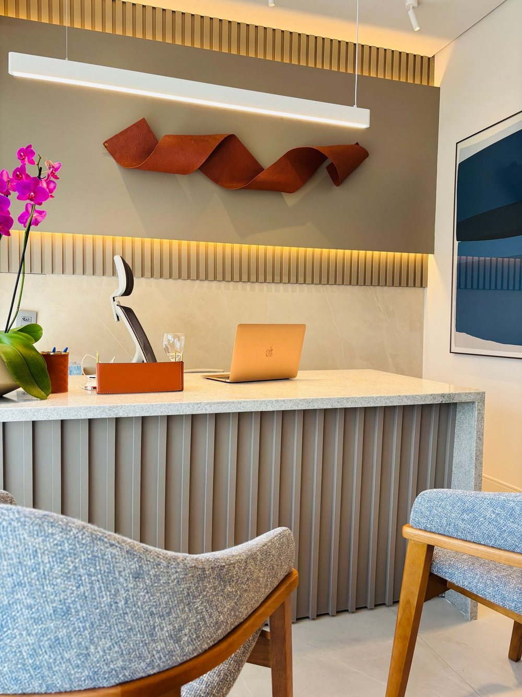

Presencial
Sala 1302, 13º andar
Edifício Charmant Hotel e Business, Av. João Durval Carneiro, Caseb. Segunda a sexta, com hora marcada.
Mapa e horárioPsiquiatra · CRM-BA 25307 · RQE 17495
Psiquiatria com escuta, em Feira de Santana ou por vídeo.
Avaliação e acompanhamento de ansiedade, depressão, TDAH, transtorno bipolar e insônia, para adultos e adolescentes a partir dos 10 anos. Também atua com laudos, pareceres e perícias psiquiátricas.
4,8★55 avaliações no Google · 191 opiniões na DoctoraliaPor onde começar
Escolha um assunto e leia com calma, no seu tempo. Cada página traz informação geral e o que a própria Dra. Vanessa já escreveu sobre o tema. A indicação é individual, definida em consulta.
Preocupação constante, aperto no peito, crises de pânico.
Ansiedade e pânicoHumorTristeza que persiste, desânimo, perda de interesse.
DepressãoAtençãoDistração, desorganização e impulsividade, em adultos e adolescentes.
TDAHSonoDificuldade para pegar no sono ou acordar de madrugada.
InsôniaTambém: Transtorno bipolarLaudos, pareceres e períciasSobre a Dra. Vanessa
Antes de tudo, escuta
No perfil da Doctoralia, a Dra. Vanessa conta que é “médica generalista desde 2011 e médica psiquiatra desde fevereiro de 2019” e lista o que considera seus objetivos na prática clínica. São eles que organizam a consulta.
“Trazer informação atualizada e de qualidade sobre os transtornos mentais em linguagem acessível para cada paciente.”
“Fazer avaliação diagnóstica cuidadosa através da escuta acolhedora do relato do paciente e de seu acompanhante (quando necessário) […]”
“[…] buscando sempre respaldo científico e discutindo as opções com cada um.”
“Valorizar a relação médico paciente, construindo a cada encontro, seja este presencial ou on-line, uma relação de confiança e respeito.”
Trechos do “Sobre mim” da Dra. Vanessa na Doctoralia, com cortes marcados por […].
Trajetória
Antes da residência, sete anos como médica generalista, boa parte na atenção básica. As datas vêm do perfil dela na Doctoralia, do CNES (cadastro nacional dos estabelecimentos de saúde) e da Receita Federal.
Graduação na Escola Superior de Ciências da Saúde da Santa Casa de Misericórdia de Vitória (ES).
DoctoraliaMédica da Estratégia Saúde da Família no Espírito Santo e na Bahia, com o PROVAB em Teixeira de Freitas, e especialização em Saúde Coletiva pela UFBA (2013–2014).
CNES · edital SES-DF/UnB · DoctoraliaResidência médica em Psiquiatria pelo Hospital das Forças Armadas (DF). Psiquiatra desde fevereiro de 2019, nas palavras dela.
DoctoraliaAbre a empresa de consultas médicas em Feira de Santana e começa a atuar como psiquiatra também em CAPS da região.
Receita Federal · CNESPós-graduação em Psiquiatria Forense no HCFMUSP, em andamento, e atuação como psiquiatra no Conjunto Penal de Feira de Santana.
Doctoralia · CNESO consultório passa para o 13º andar do Edifício Charmant Hotel e Business, no Caseb.
Novidade no perfil da DoctoraliaDuas portas

Edifício Charmant Hotel e Business, Av. João Durval Carneiro, Caseb. Segunda a sexta, com hora marcada.
Mapa e horárioA mesma consulta, pela tela. No site dela de 2024, a Dra. Vanessa escrevia:
“Atendendo tanto presencialmente quanto de forma remota, adapto-me às suas necessidades […]”
Site da Dra. Vanessa, 2024 · cópia no Internet Archive
Minha consulta foi por chamada de vídeo … 5 estrelas pelo ótimo atendimento.
Nas palavras dela
“Ter medo de começar um antidepressivo não é bobagem, e esse receio merece atenção. […] Cada história pede uma avaliação cuidadosa.”
Legenda da Dra. Vanessa no Instagram @vanessacarvalho.psiquiatra.
Em 2021, numa postagem da antiga página dela no Google: “Você não é o que te aconteceu, seus traumas não determinam seu futuro! Você pode escolher como quer viver daqui pra frente. É difícil, um processo longo, com desafios diários […]”
Conheça a médicaAvaliações
4,8 no Google, com 55 avaliações · 191 opiniões na Doctoralia
Médica atenciosa, com escuta sensível, profissional de excelência.
Extremamente humana e acolhedora, não me senti desconfortável com ela em momento nenhum.
A profissional é extremamente humana, cuidadosa e empática, exatamente como espero de alguém que lida com saúde mental.
Me atendeu com a maior paciência, bem detalhista na consulta, uma pessoa que te passa muita calma e confiança.
Me deixou muito à vontade na consulta. Esclareceu algumas dúvidas.
Muito responsável e simpática. Sua empatia e cuidado com o bem estar dos pacientes me encantaram.
…teve uma escuta bastante sensível para minhas demandas.
Excelente médica! Atenciosa, paciente, acolhedora.
Uma Super profissional, atenciosa e muito querida. Ótima agilidade no atendimento.
Trechos de avaliações públicas na ficha do Google e na Doctoralia, com nome abreviado e a data informada pela plataforma.
Ela já respondeu
A Dra. Vanessa respondeu 19 perguntas de pacientes na Doctoralia. Estes são trechos de quatro delas. Cada cartão leva à página do site sobre o assunto.
Sobre a demência, não há respaldo científico até o momento que nos permita fazer essa associação.Resposta dela na Doctoralia · ler a páginaAnsiedadePreciso cortar o café?
Não é preciso suspender seu cafezinho :) […] Quando a ansiedade está muito elevada, pode ser benéfico reduzir o consumo da cafeína.Resposta dela na Doctoralia · ler a páginaTranstorno bipolarE os efeitos na atenção e na memória?
Pode ser preciso ajuste de dose ou alguma outra estratégia. […] Não deixe de procurar ajuda, e não suspenda as medicações por conta própria.Resposta dela na Doctoralia · ler a páginaDepressãoE quando chega a hora de parar?
O desmame também faz parte do tratamento. Procure um psiquiatra para te acompanhar neste momento.Resposta dela na Doctoralia · ler a página
O consultório
No Caseb, na Av. João Durval Carneiro, endereço do consultório desde maio de 2025. A consulta é com hora marcada, só particular.
Consultório da Dra. Vanessa CarvalhoEdifício Charmant Hotel e Business · Av. João Durval Carneiro · sala 1302, 13º andar · Caseb · Feira de Santana – BA · CEP 44051-335
Horário de atendimento
Horário da ficha do consultório no Google. A consulta é com hora marcada: confirme o dia e o horário com a equipe.

Dúvidas frequentes
No Edifício Charmant Hotel e Business, sala 1302, 13º andar, na Av. João Durval Carneiro, Caseb, Feira de Santana. Veja o mapa e como chegar.
Sim. O perfil dela na Doctoralia informa consulta presencial e consulta por vídeo. Combine o formato com a equipe ao agendar.
Pelo WhatsApp de atendimento do consultório, (75) 98262-0308. A consulta é com hora marcada.
Segundo a Doctoralia, a Dra. Vanessa atende só pacientes particulares. Confirme os detalhes com a equipe.
Ela atende adultos e, segundo a Doctoralia, crianças e adolescentes a partir dos 10 anos. Confirme com a equipe ao agendar. Veja a página sobre TDAH.
Não é preciso encaminhamento para uma consulta particular. Se você já tem exames, relatórios ou receitas anteriores, leve-os à consulta.
Agende
Consulta com hora marcada no Edifício Charmant, sala 1302, em Feira de Santana, ou por vídeo. Fale com o consultório pelo WhatsApp (75) 98262-0308.
Em crise ou risco imediato? Procure o pronto-socorro mais próximo, o SAMU (192) ou o CVV (188).